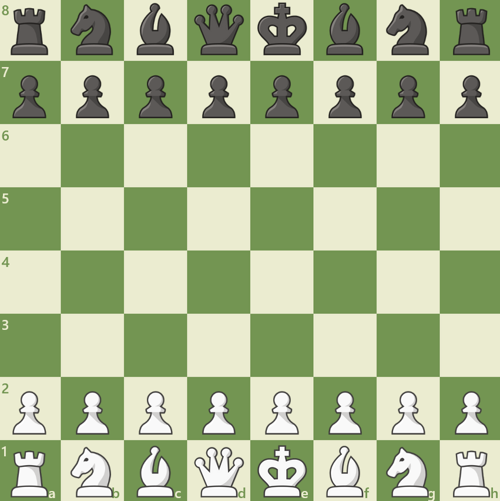
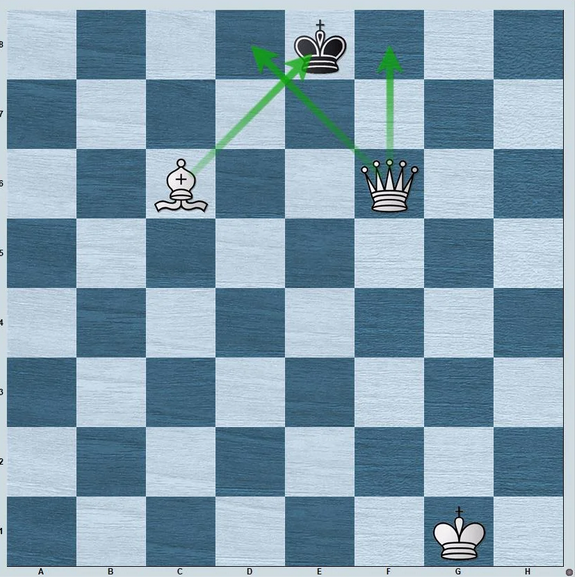

Willkommen beim Chess-Tutorial
Lerne Schritt für Schritt alles, was du für dein erstes Spiel brauchst.
Schach ist ein strategisches Brettspiel für zwei Spieler. Jeder Spieler steuert 16 Figuren auf einem 8×8-Feld und versucht, den König des Gegners schachmatt zu setzen.
Das Spiel existiert seit mehr als 1 500 Jahren und gilt als eines der komplexesten und faszinierendsten Spiele der Welt.
- ✓ Aufbau des Schachbretts
- ✓ Alle 6 Figuren und ihre Zugregeln
- ✓ Schach, Schachmatt & Patt
- ✓ Grundlegende Strategien
- → Danach: direkt im Playground üben!
Das Ziel ist es, den gegnerischen König in eine Lage zu bringen, aus der er nicht mehr entkommen kann – das nennt man Schachmatt.
Der König wird dabei nie wirklich „geschlagen". Sobald Schachmatt droht, endet die Partie sofort.
Das Schachbrett
Das Spielfeld verstehen – Reihen, Linien und die richtige Aufstellung.
Das Schachbrett hat 64 Felder in einem 8×8-Raster, abwechselnd hell und dunkel. Die Felder werden durch Koordinaten bezeichnet:
- → Linien (a–h): senkrechte Spalten
- → Reihen (1–8): waagrechte Zeilen
- → Jedes Feld hat eine eindeutige Adresse, z. B.
e4

Je 16 Figuren pro Seite:
Die Dame steht immer auf ihrer eigenen Farbe:
- ♕ Weiße Dame → helles Feld (d1)
- ♛ Schwarze Dame → dunkles Feld (d8)
Die Figuren
6 verschiedene Figuren – jede mit einzigartigen Fähigkeiten.
Bewegt sich ein Feld in jede Richtung. Darf nie auf ein bedrohtes Feld ziehen.
Sonderregel: Rochade mit dem Turm.
Stärkste Figur: zieht beliebig weit horizontal, vertikal und diagonal.
Zieht beliebig weit horizontal und vertikal. Stark im Endspiel und auf offenen Linien.
Zieht beliebig weit diagonal – bleibt immer auf seiner Feldfarbe.
Bewegt sich in einem L: 2+1 Felder. Einzige Figur, die überspringen kann.
Zieht ein Feld vorwärts, schlägt diagonal. Beim ersten Zug optional zwei Felder.
Zugregeln & Sonderzüge
Regeln, die du kennen musst – und drei besondere Züge.
- → Weiß beginnt immer.
- → Pro Zug darf genau eine Figur bewegt werden.
- → Eine Figur schlägt, indem sie das gegnerische Feld betritt.
- → Schach muss im nächsten Zug abgewehrt werden.
- → Der eigene König darf nie im Schach stehen bleiben.
König und Turm tauschen gleichzeitig die Position – der einzige Zug mit zwei Figuren.
Schlägt ein Bauer im ersten Zug zwei Felder vor, kann ihn ein gegnerischer Bauer im Vorbeigehen schlagen – aber nur sofort im nächsten Zug.
Erreicht ein Bauer die letzte Reihe, muss er sofort umgewandelt werden:
In der Praxis wird fast immer die Dame gewählt.
Schach, Schachmatt & Patt
Die drei wichtigsten Spielsituationen – und wie sie sich unterscheiden.
Ein König steht im Schach, wenn er von einer gegnerischen Figur direkt bedroht wird.
Möglichkeiten zur Abwehr:
Schachmatt: Der König steht im Schach und es gibt keinen legalen Zug zur Rettung.

Patt: Nicht im Schach, aber kein legaler Zug möglich → unentschieden.
- → 50-Züge-Regel
- → Dreifache Stellungswiederholung
- → Gegenseitige Einigung
- → Zu wenig Material (z. B. König gegen König)
Grundlegende Strategie
Vier goldene Prinzipien für den Spielbeginn – und taktische Muster.
Besetze oder kontrolliere e4, e5, d4, d5. Wer das Zentrum beherrscht, kontrolliert das Spiel.
Bringe Springer und Läufer früh ins Spiel. Jede Figur sollte aktiv beteiligt sein.
Rochiere früh. Ein ungeschützter König in der Mitte ist in ständiger Gefahr.
Ziehe jede Figur möglichst nur einmal in der Eröffnung.
- ★ Gabel: Gleichzeitiger Angriff auf zwei Figuren.
- ★ Spieß: Wertvollere Figur wird zur Bewegung gezwungen.
- ★ Fesselung: Figur kann nicht ziehen, da wichtigere dahinter bedroht.
- ★ Abzugsangriff: Verdeckte Drohung wird durch Wegziehen freigelegt.
Du bist bereit!
Du hast alle Grundlagen gelernt. Starte jetzt dein erstes Spiel im Playground!